I discovered the field of Computer Science through an introductory C++ programming course, and I quickly became enamoured with writing my own programs. After completing the course, however, I still hadn't considered it as a viable career option as I was more interested in Architecture, Environmental Engineering, and Economics. Eventually, my teacher convinced me to take AP Computer Science the following year. The object-oriented design of the Java programming language opened my eyes to the possibility of pursuing a Computer Science major in college. I spent the following summer learning various programming languages through Code Academy and began submitting college applications with my intended major as Computer Science!
Family and Home
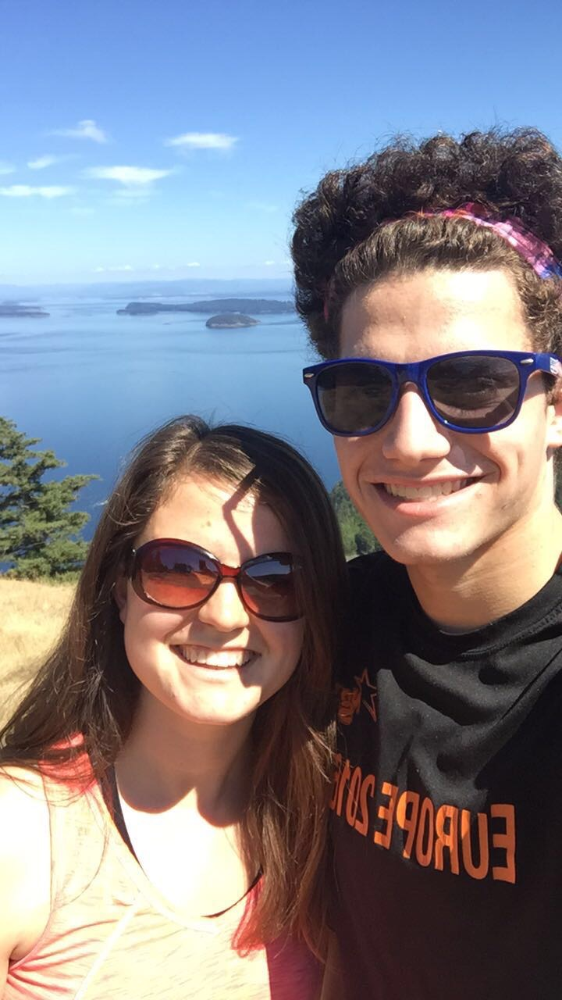
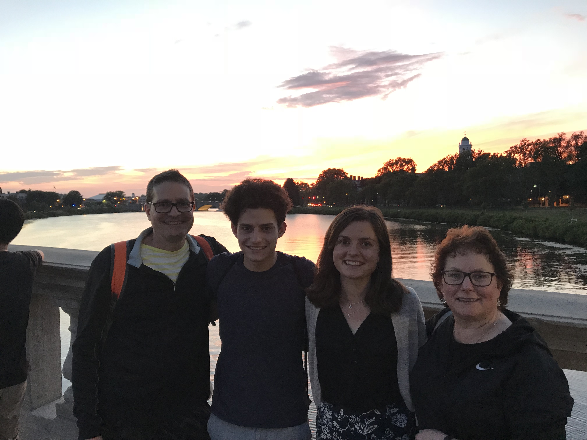
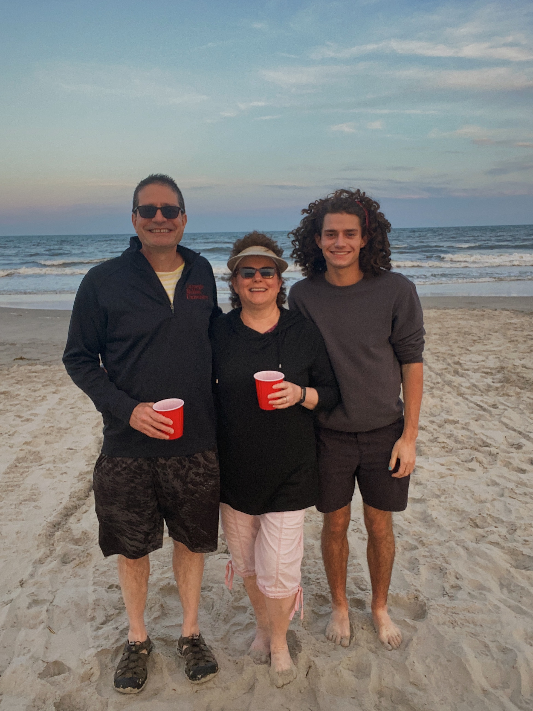
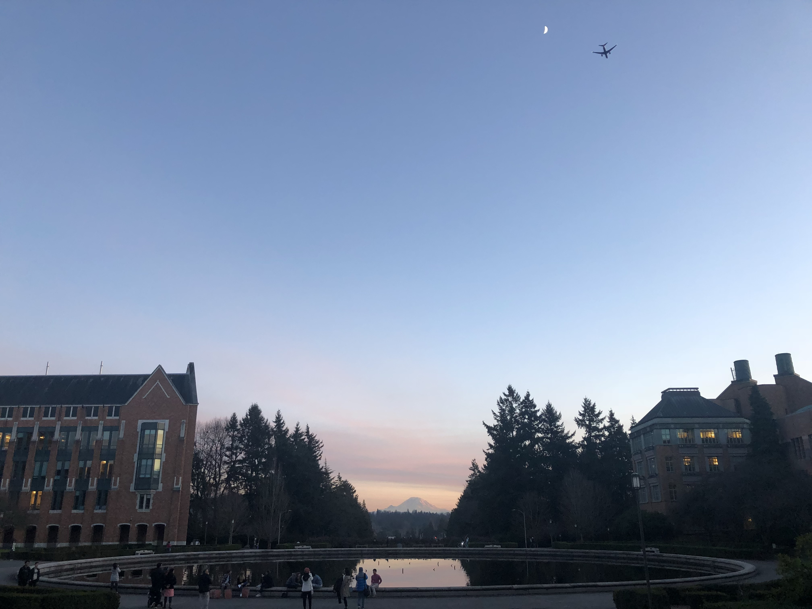
I would define family as those who provide you with support and unconditional love; I consider my family to be a vital piece in my life. My parents always encouraged me to pursue my passions and pushed me to reach my fullest potential. They were there for every soccer game and track meet, supported me when I was transferring to the University of Pittsburgh, and have gone on countless adventures with me. I deeply admire and strive to be like my older sister. She is my best friend, an even greater sibling, and someone I know I can always count on. I don't think 'family' necessarily means blood related as I also consider my close friends to be family. To me, home is somewhere you feel welcome and comfortable. Over the last few years, I've called many places my home. I grew up in Pittsburgh and have lived in the Sewickley area most of my life. However, in 2017 I moved to Seattle, Washington to attend the University of Washington. While it was initially a significant change and culture shock, I grew to love the city and I greatly enjoyed the two years I lived there. However, being away from my family became too difficult and I decided to transfer to Pitt to be closer to home. I wouldn't consider Pitt and the Oakland area to be my perfect match, but I have grown to appreciate it's beauty and idiosyncrasies.
Entertainment
Currently, I use media to stay informed on current events and expand my knowledge. I read various news sites such as The New York Times and listen to podcasts like NPR. I also utilize social media such as Instagram, Tik Tok, and VSCO to stay connected with my friends, share my own media, and entertain myself. When it comes to "remaking" media, I listen to music on Spotify, watch live performances on YouTube, and memorize tabs to learn how to play songs on guitar and sing the melody. The song "Imagine" by John Lennon, in the above YouTube video, is one of my favorite songs to play on guitar. In my future career in the field of computer sciecne, I imagine that I will continue to engage with media and even create my own.
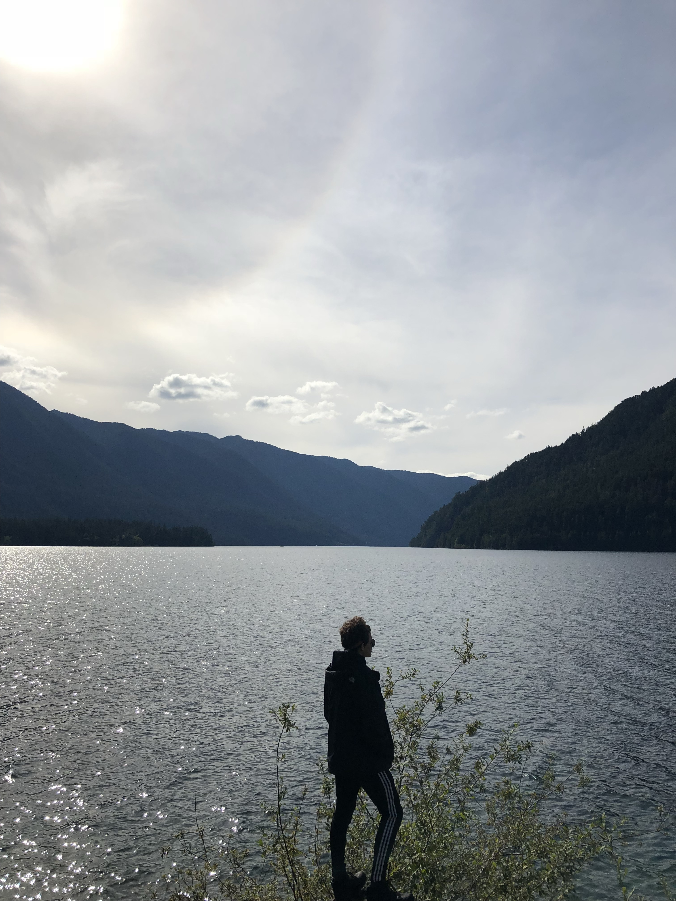
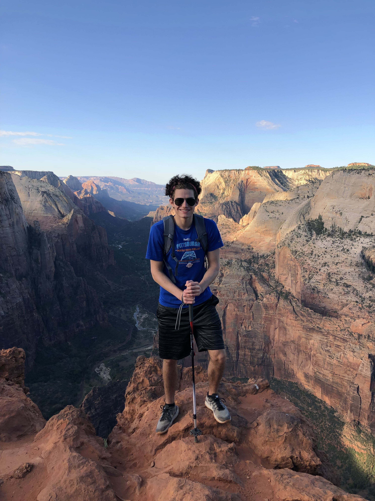
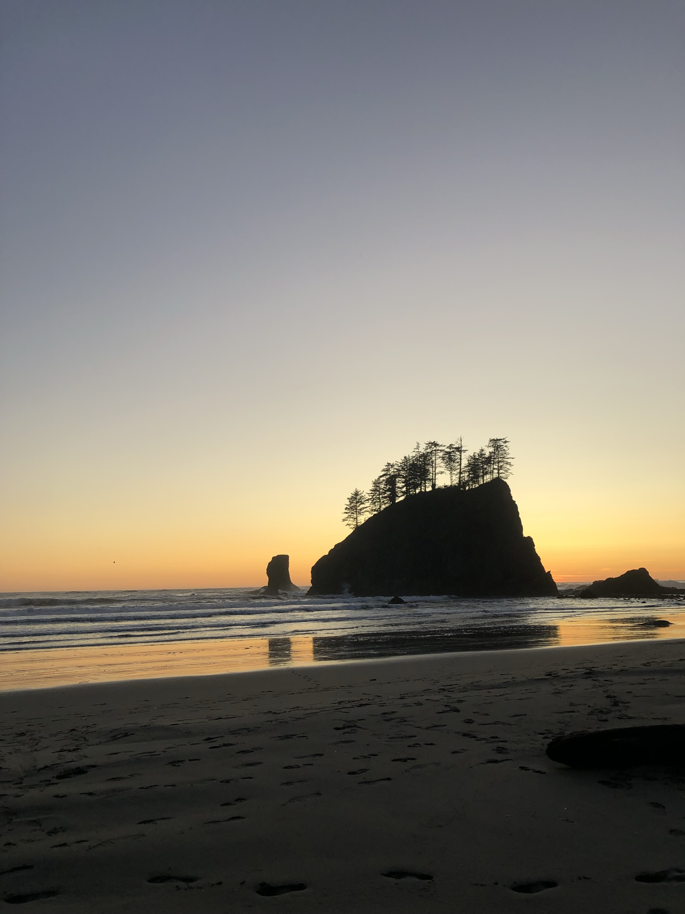
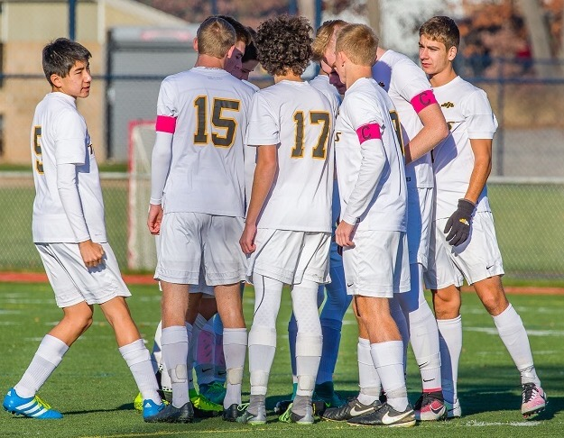
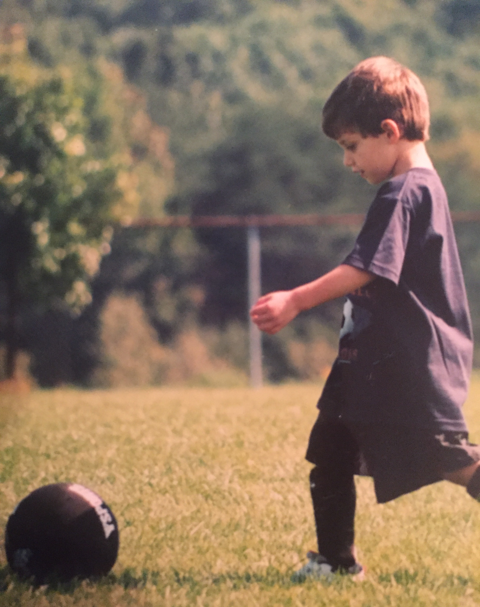
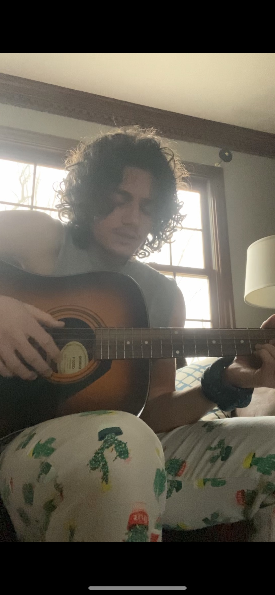
Community
In my life, I would consider myself to be apart of many different communities:
Soccer has always been a passion of mine and has kept me grounded; I started playing when I was only three years old at my local YMCA. I have so many fond memories such as making the 7th grade soccer team, going to countless cup tournaments, and winning the WPIAL Championship during my senior year of high school. I even enjoyed the games in the pouring rain, the grueling two mile run at high school tryouts, and my dad making me play with only my left foot for an entire season. Soccer has provided me such stability over the years and I am so thankful that it was and will continue to be a part of my life.
Another community I belong to is music. I have been an avid guitar player over the last four years and I have begun to write my own music. Over quaranite, I expanded my skillset by learning how to play the piano, base guitar, and drums. Music is something that I can get lost in and I regret not learning to play guitar sooner. However, I am greatful to now have a creative outlet to express myselff.
A final community that I belong to is hiking. When I was only six years old, my family and I went on our firsrt hiking trip to The Great Smokey Mountains National Park. Ever since, we have gone hiking almost every summer. Some of the national parks I have visited include Glacier, Zion, Olympic, Shenandoah, The Great Smokey Mountains, Rocky Mountain, and various other state parks. Hiking is a great way to escape into nature and is one of my favorite warm weather activities.
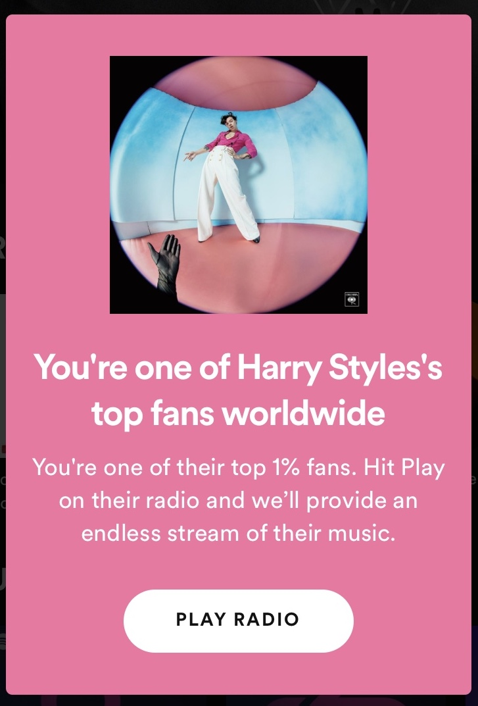
School
I think higher education at the university level is a stepping stone that propels you into your future endeavors. I have gained much hands-on experience by taking various high-level programming courses at both the University of Washington and the University of Pittsburgh. Being sucessful in past courses has given me the opportunity to be a TA, work on research, and complete interesting projects. I am currently preparing to apply to graduate school to achieve either a Neuroscience or Computer Science masters degree in order work in a cutting edge field: artificial intelligence.


 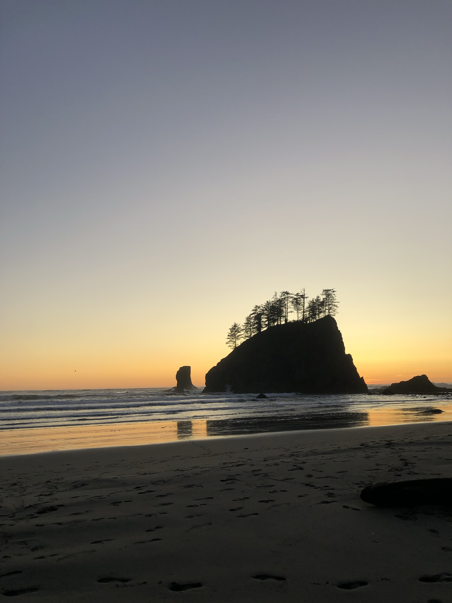
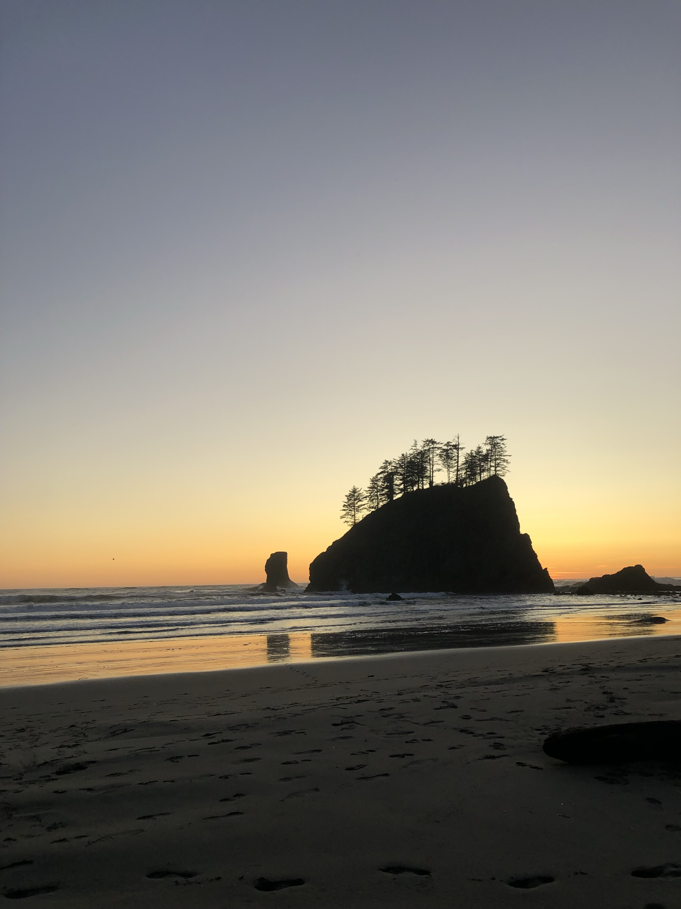